14 October 2026 · isolated worktree · synthetic data
Simple teacher flow: technical acceptance
The current acceptance contracts passed. Real HTTP authentication, PostgreSQL, LangGraph checkpoints and Neo4j were exercised. Publication occurred only after the explicit button click on a disposable fixture. The coordinator owns the separate fresh usability review and release decision.
What was proved
- 58 job-backed skills + 394 reference-only rows. A keyboard category action selects the exact 58 IDs despite a SQL filter; all 58 are checked across six pages. An off-page exclusion leaves 57, survives a real failed save, retry and reload, and preserves the separate reference exclusion.
- ETL provenance stays complete. Create ETL and Develop ETL/ELT share one candidate with four distinct original postings and eight validated passages, retained through approval.
- Comparison remains evidence-specific. Actual ECharts SVG clicks and disposal were exercised. SQL has a related Programming descriptor with synthetic 4.2/5 importance; missing ratings stay unavailable. Thirteen numerical corpus cases and all five role choices remain inspectable.
- Changes are explicit. Explain has no tools and leaves SQL choices/publication and settled configuration unchanged. Advice requires Apply, excluded additions remain protected, stale revisions/context are rejected, changed candidates require acknowledgement, and draft navigation is guarded.
- Recovery uses real failures. SQL triggers reject a draft save and checkpoint deletion. Local choices/questions survive; source failure yields zero candidates; explicit retry/reset recovers. Aborting the actual chart module preserves the accessible values and checklist. Purged evidence is rechecked and its old body is not shown.
Student preservation and publication
| Readback | Before | After explicit approval |
|---|---|---|
| SQL publication revision / approval rows | 0 / 0 | 1 / 1; projected; repeat request remains one row |
| Approved IDs / supporting links | 57 saved, no publication | Exact same 57 IDs; four links per item; exact review digest |
| Saved path (real Neo4j-backed student API) | 1 saved book skill | Deep equal, including IDs and chapter relationships |
| Saved resource | 1 reading, ready content | Deep equal, including URL and content |
| Quiz and mastery | 1 answered, 1 correct; completed; is_known=true | Deep equal, including answer timestamp |
These checks are nonempty: the student already had a saved reading, answered quiz and mastered skill before publication. Full runtime ledgers and private authentication manifests are excluded from this report and Git.
Measured layout
The assertion measures the actual main pane, current decision and action. Both required desktop sizes have no main scrolling. Five choices plus required coverage and pending proposals were exercised. Curriculum warnings use three summaries and a complete paged detail view. At 320 pixels the main pane scrolls vertically; keyboard focus brings the action into view, with no horizontal overflow.
| State | Viewport | Main client / scroll px | Main skill rows | Action bottom px |
|---|---|---|---|---|
| Five choices + coverage | 320 × 667 | 583 / 782 | 5 | Reachable |
| Five choices + coverage | 390 × 844 | 780 / 780 | 5 | Reachable |
| Five choices + coverage | 1280 × 720 | 660 / 660 | 5 | Reachable |
| Five choices + coverage | 1440 × 900 | 840 / 840 | 5 | Reachable |
| Curriculum approval | 1280 × 720 | 660 / 660 | 3 targets | 552 |
| Curriculum approval | 1440 × 900 | 840 / 840 | 3 targets | 732 |
Mobile action reachability is checked after scroll/focus. Desktop action coordinates are absolute viewport positions. The 320-pixel Browse dialog has no horizontal scrolling, and all six pages remain reachable.
Defects found and fixed
- Curriculum overflow: the original 1280 × 720 main pane measured 660 pixels high with 870 pixels of content, and the approval action ended at y=774. Compact summaries and an explicit remaining-warning count now keep the action visible. All four warnings and all 57 target IDs remain available; digest and exact-ID guards remain unchanged.
- Long unsupported names: the original alert printed full unbroken Unicode names across the main pane. It now reports the exact count and removal requirement; Browse presents every full name as breakable text with exact inspection/removal IDs.
- Narrow-screen review: Browse now constrains its grid and wraps pagination; its 320-pixel dialog measures 286/286 pixels client/scroll. Coverage copy uses the full 280-pixel width above its action.
- Source identity and keyboard return: links use currently verified title/employer, with posting-ID fallback while checking or purged. Escape restores the main Inspect button, or the surviving Browse trigger after inspecting from its dialog. No dialogs stack.
Verification receipts
simple-contracts,simple-workflow,simple-corpus, andsimple-layoutpassed. Formal review fix round 1: the complete fresh-seededsimple-flowpassed with exit 0 on new disposable course 96. It checked initial country/SOC/source-outcome state, all 58 choices, save failure/retry/reload, actual fresh Continue mapping HTTP 200, exact 57-ID/digest explicit approval, projected/idempotent publication and unchanged nonempty student records. No manual state repair or step transition was used. This supersedes the earlier incomplete full-flow receipt; the separate course-66 mapping receipt remains historical evidence. Application, helper and harness code are unchanged from25644546db0748e215db91166aa5053e32f64ce1.simple-keyboardpassed and its assertions are included insimple-layout. Defaultallruns the five current suites. Historical names redirect explicitly; obsolete dashboard selector bodies were removed.- Curriculum regression: RED then 88 tests passed across IntegrationReview and MarketDemand. Unicode regression: RED then 40 tests passed across SkillChoice and MarketDemand. Review fixes: 58 tests passed; adjacent label/context checks: 32; final focus/choice checks: 22. These overlapping sets are not summed.
- Frontend lint and production build passed; backend Ruff check and format passed for 330 files; JavaScript syntax and Git whitespace checks passed.
- Existing integrated receipts reused: frontend547 tests/27 files plus199 affected tests; backend184 core plus208 context/pattern/chat tests. No backend production algorithm changed.
Retained numerical corpus (13 cases)
- denominator_9
- denominator_10
- spread_1_0_distinct_role_ids
- missing_cell
- suppressed_numeric_not_plotted
- ambiguous_cell
- explicit_descriptor_choice
- tie_label_then_id
- same_denominator_only
- max_two_no_repeated_skill
- filtered_empty
- partial_coverage_qualified
- software_reference_not_numeric
Screenshots
Click any image for its full-size synthetic capture.


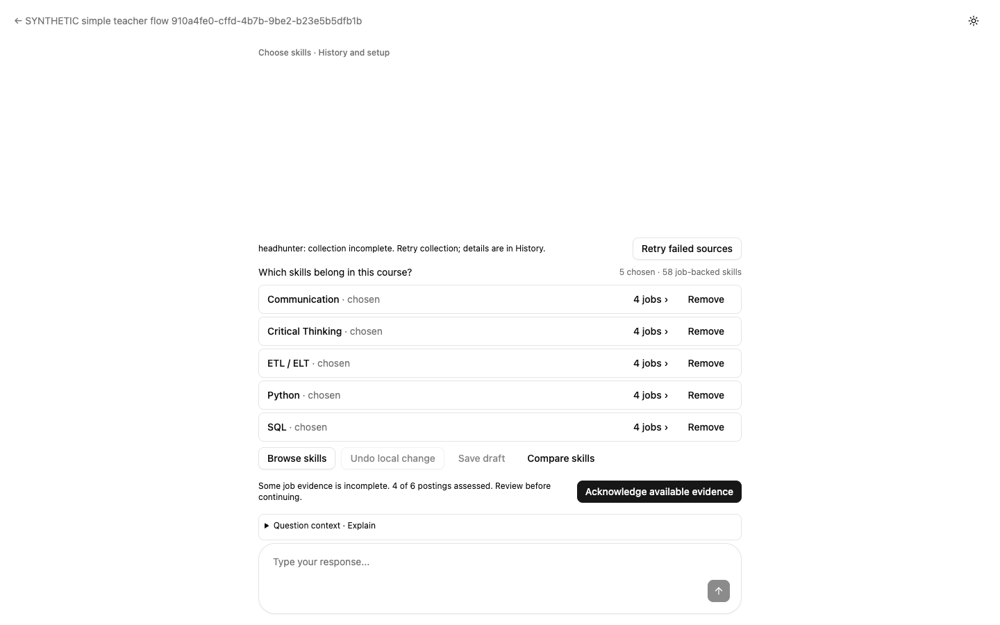

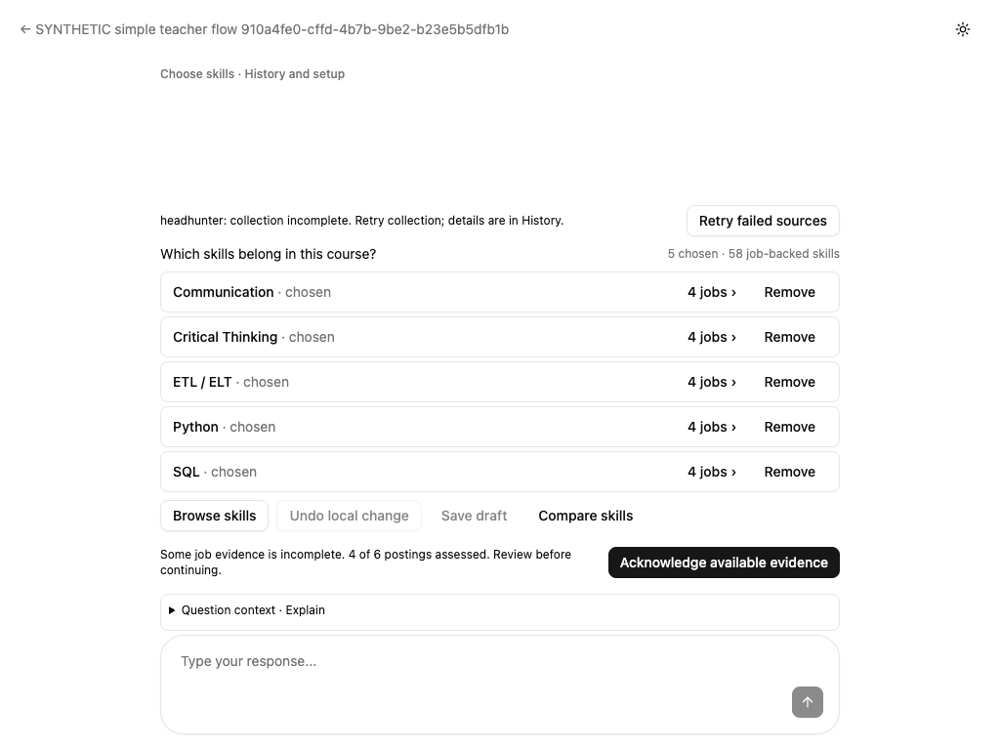

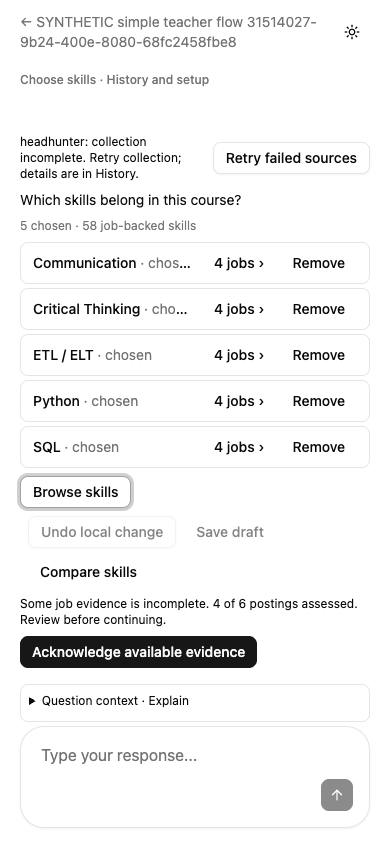

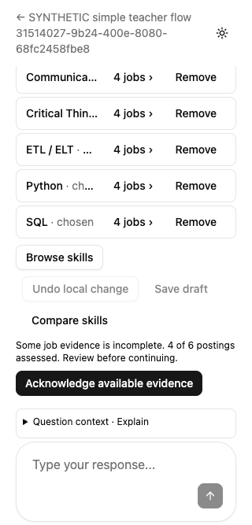


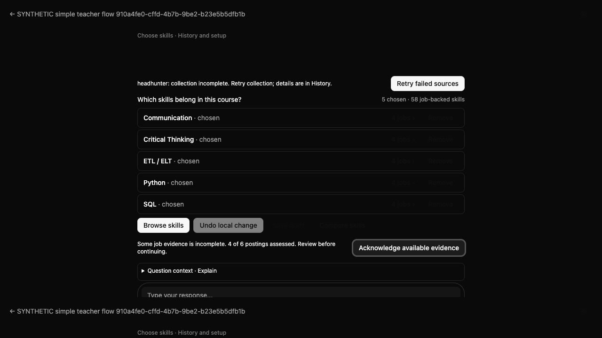

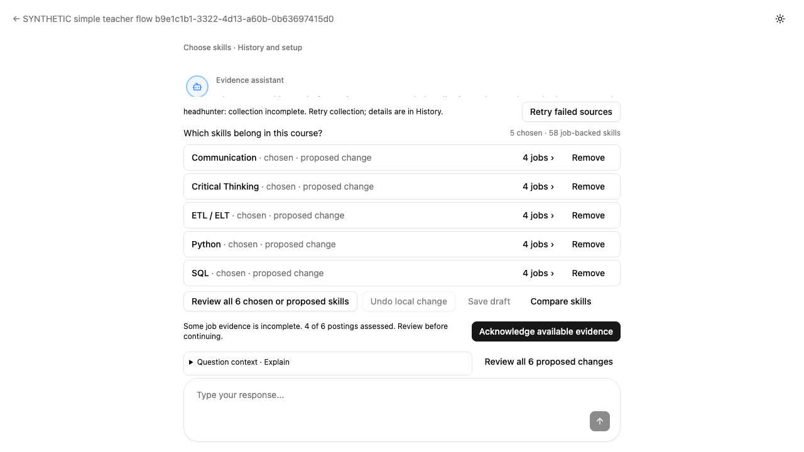

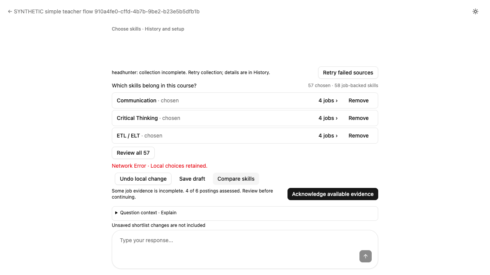


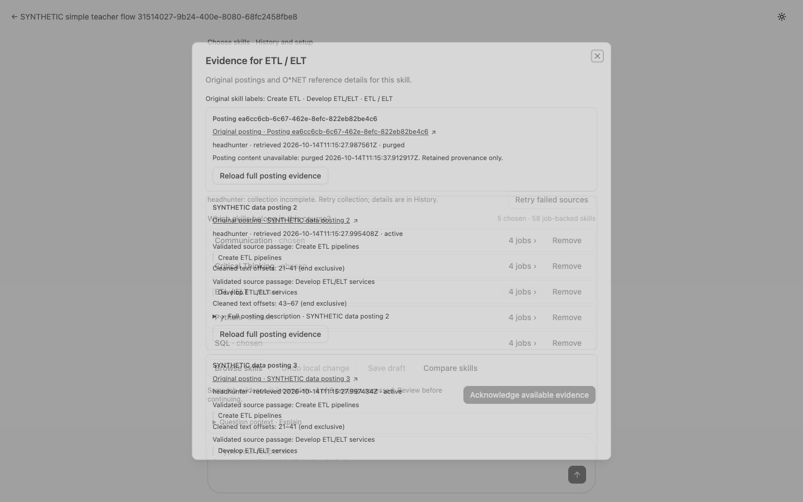

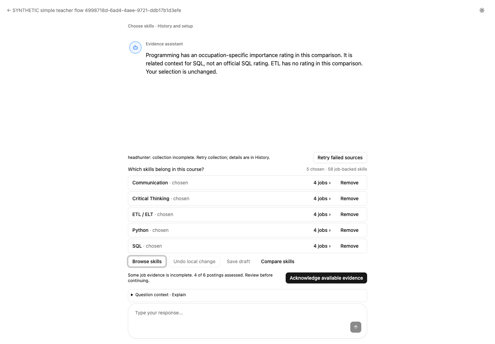


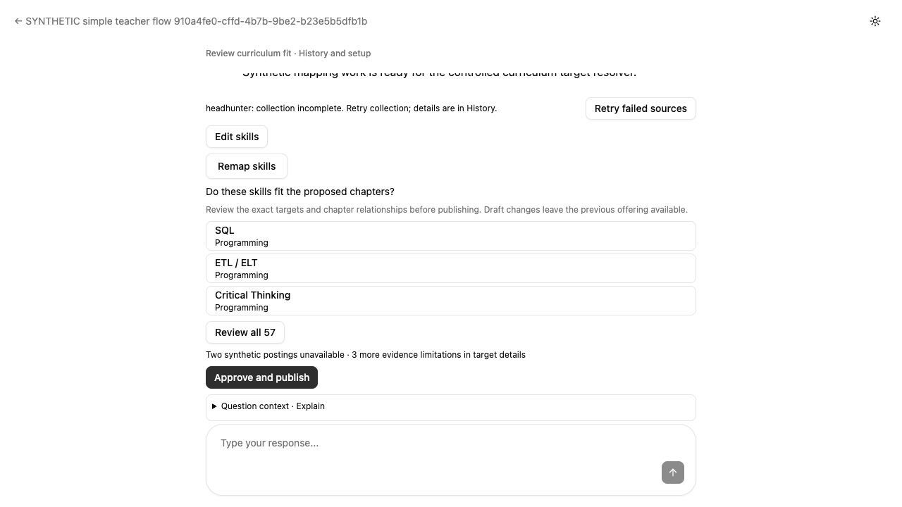

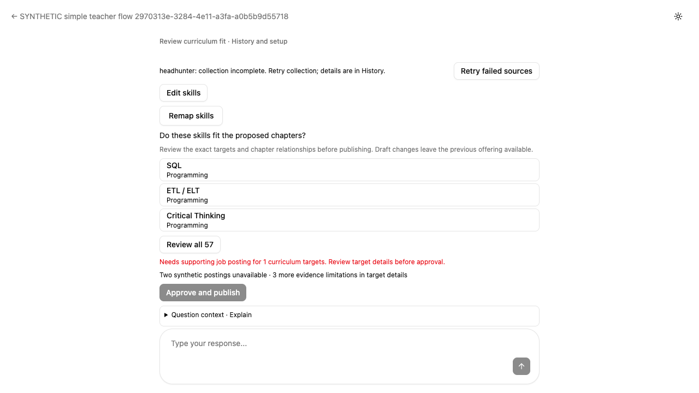

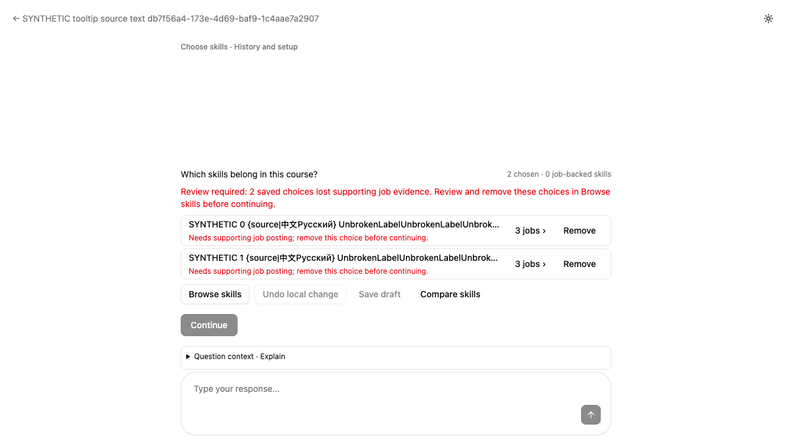

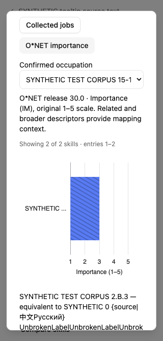

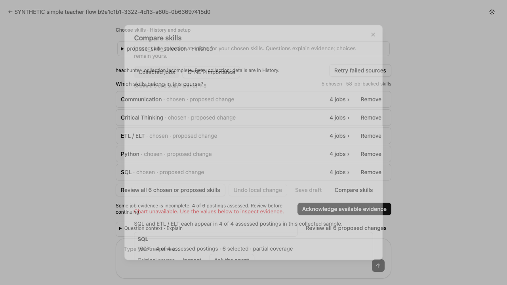

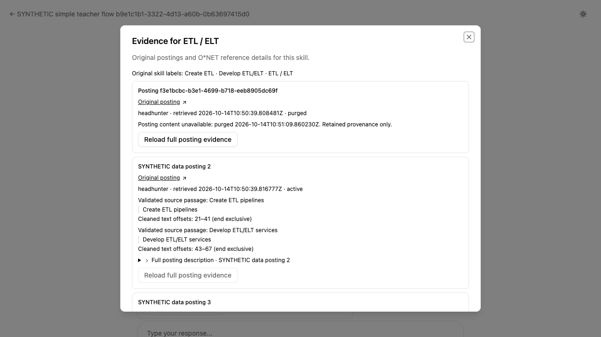

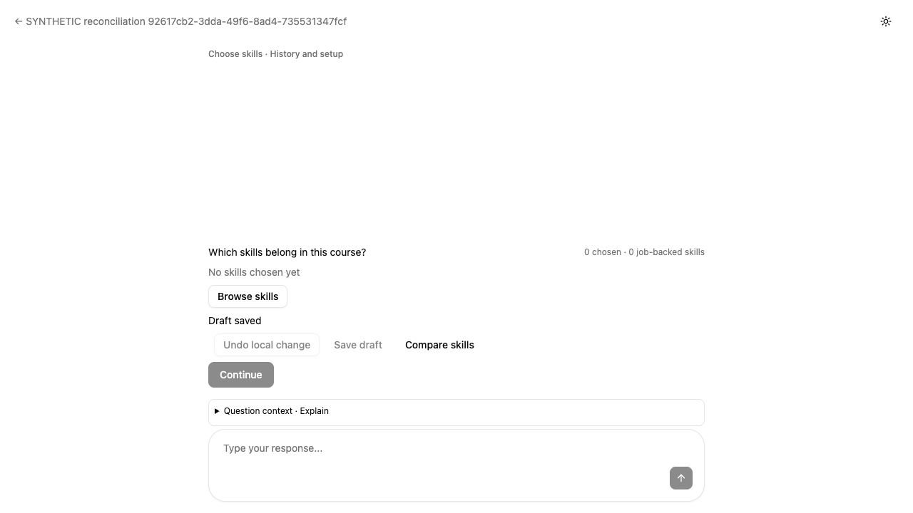

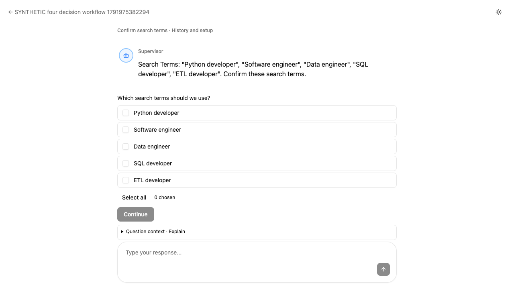

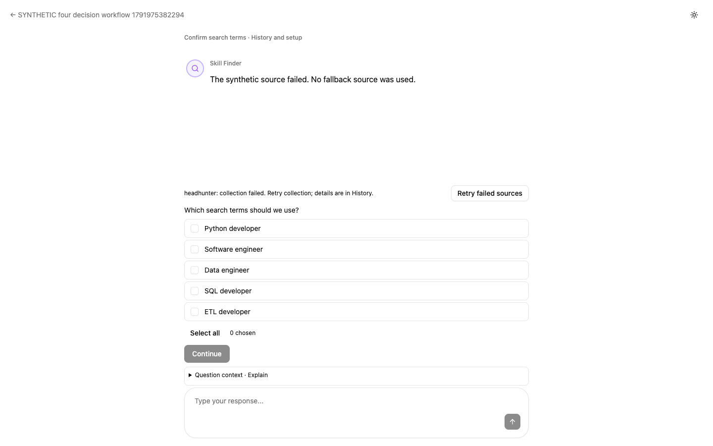

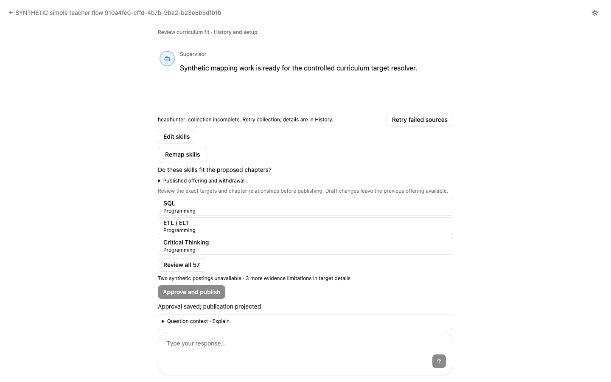
Scope and limitations
The initial fixture incorrectly used occupation objects and incomplete source-outcome dictionaries in agent state. It now uses SOC strings, confirmed country and the existing SourceOutcome DTO; state readback and actual mapping 200 are mandatory assertions. Provider transport and model output are controlled at the test-helper boundary; no browser API responses are mocked. The real search/group workflow collected three synthetic postings. The larger 58-skill fixture separately exercises complete review and publication; it does not claim a live model extracted that sample. O*NET values in these fixtures are explicitly synthetic, not official ratings. The preliminary retry stopped before course creation because synthetic authentication had expired; renewing private credentials resolved it. The expected disabled-Azure-storage warnings reflect intentionally absent external credentials. Existing lint reports one unused suppression in an unrelated test, and Vite reports its existing large-chunk warning. A brief setup warning during post-response reconciliation was observed by the independent reviewer; it clears when the authoritative snapshot settles, with the same decision and configuration. Live providers, production authentication and actual teacher publication were not used. The unapproved fresh-review fixture is separate from the published preservation fixture.